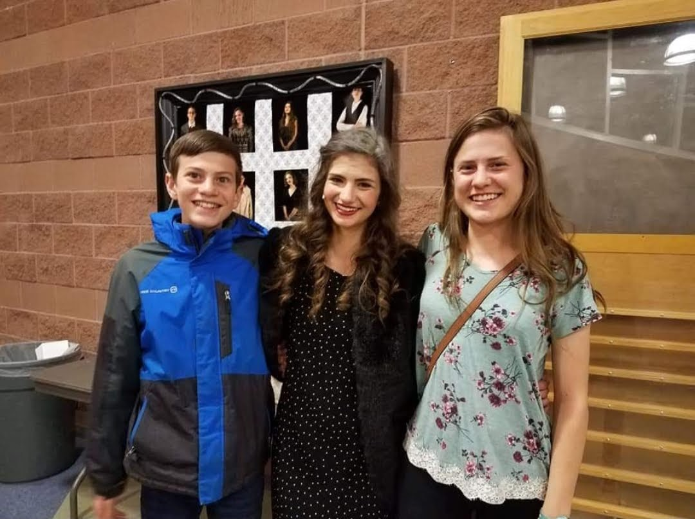

Peters, Alison - Software Development Methods and Tools
I was born and raised in Loveland, CO. I am a senior studying Chemical and Biological Engineering.
I have had two summer internships: one at a company that makes printer ink and one at a company that
makes gene therapy medication. I am currently a course assistant for a heat transfer class.
I am studying computer science as a minor because I enjoy programming and I think it's a really
applicable skill to my future career path.
Interests

Chemistry
I would tell you a chemistry joke, but I'm afraid it wouldn't get a good reaction.
Running
I have been running since middle school and enjoy exercising during quarantine.

Family
I love spending time with my family, especially my siblings.